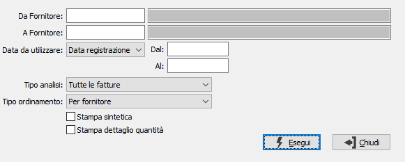

Lista fatture
Il programma effettua la stampa dell'elenco delle fatture esistenti in archivio in base ai parametri inseriti dall’utente.
E’ possibile stampare i documenti relativi ad una tipologia omogenea di fatture, e/o ad uno o più fornitori entro limiti di data specificati.
E’ possibile selezionare solo le fatture da contabilizzare oppure tutte le fatture oppure solo le contabilizzate.

DA FORNITORE: eventuale codice del fornitore, presente in anagrafica, da cui si vuole iniziare la selezione di analisi. Confermando a vuoto, la selezione inizia dal primo fornitore valido. Sul campo sono attive le funzioni di ricerca (F9).
A FORNITORE: eventuale codice del fornitore, presente in anagrafica, con cui si vuole terminare la selezione di analisi. Confermando a vuoto, la selezione termina con l'ultimo fornitore valido. Sul campo sono attive le funzioni di ricerca (F9).
DATA DA UTILIZZARE: Indicare quale data deve essere utilizzata per filtrare i documenti per il periodo "Dal" "Al"; valori possibili: Data registrazione o Data documento.
DAL: eventuale data da cui deve iniziare l’analisi dei documenti relativamente ai precedenti parametri di selezione. Confermando a vuoto, l’analisi inizia con il primo documento valido.
AL: eventuale data con cui si desidera terminare l’analisi dei documenti relativamente ai precedenti parametri di selezione. Confermando a vuoto, l’analisi si conclude con l'ultimo documento valido.
TIPO ANALISI: consente di selezionare per l'analisi le fatture da contabilizzare, quelle contabilizzate oppure tutte le fatture presenti.
TIPO ORDINAMENTO: indica l'ordinamento che si desidera avere in stampa; valori possibili: per fornitore, per numero.
STAMPA SINTETICA: indica se effettuare la stampa in formato sintetico (casella con segno di spunta) o completa (casella vuota).
STAMPA DETTAGLIO QUANTITÀ: check box. Se contiene la spunta, indica se nella stampa desideriamo include il dettaglio delle quantità.
Confermando tramite pressione del bottone Esegui, viene avviata la stampa della lista che riporta le informazioni sulle fatture selezionate.